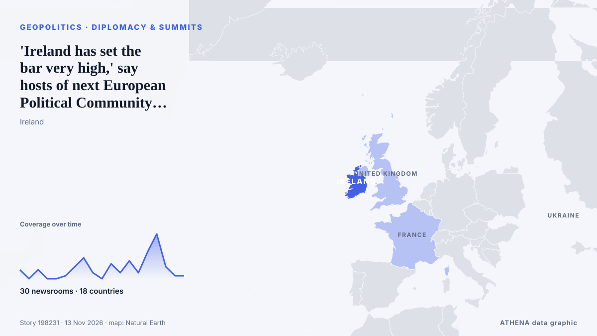

'Ireland has set the bar very high,' say hosts of next European Political Community summit

Around 50 leaders are expected in the capital for talks on European security, Ukraine and other shared challenges | follow for updates. de Irish Examiner
Relayé de façon indépendante par 30 médias dans 18 pays depuis le 8 nov. ; premier à l'annoncer : RTÉ News ; la couverture faiblit. ATHENA juge le risque modéré (3.5/10), surtout en raison de la gravité des dommages décrits et de sa portée géographique et sectorielle. La confiance est de 87 % (élevée) : 30 médias indépendants le confirment, avec une fiabilité moyenne des sources de 73 %. Médias par pays : Irlande (19), Royaume-Uni (8), Ukraine (2). Couverture : du 8 nov. au 12 nov., 88 heures.
Pourquoi c'est important: Les évolutions de sécurité et de diplomatie peuvent déplacer alliances, échanges et marchés bien au-delà des pays directement concernés.
Ce qui a changé : 28 nouveaux articles de 21 rédactions dans les 24 heures jusqu'au 13 nov..
Premier titre : Ireland nowhere close to retrofitting targets - expert
Les titres sont affichés en anglais, tels que publiés.
Comment lire cette page
- Ce que vous lisez
- 30 médias dans 18 pays ont rapporté cet événement. Les reportages ci-dessous sont classés selon leur ordre de parution ; chaque titre ouvre l'article original. ATHENA n'écrit aucun reportage.
- Notre lecture
- Pour mémoire — Les reportages décrivent une affaire terminée, intérieure, commerciale ou personnelle. Nous la consignons pour que vous voyiez qui l'a rapportée et quand. Nous ne suivons pas ici de risque de conflit plus large.
- Quelle base de preuves
- Correcte Plusieurs médias indépendants concordent, mais le tableau peut encore changer.
Après retrait des doublons, des éléments hors sujet et périmés, 15 des 38 reportages listés sont retenus ; 68 % des titres correspondent à l'événement.
Environ 27 % des titres relèvent de l'analyse ou de l'opinion plutôt que du simple compte rendu.
- Ce que cela ne veut pas dire
- ATHENA mesure la façon dont un événement est rapporté, pas sa véracité. Ce n'est ni une prévision, ni un jugement sur qui a raison, ni un conseil.
- Ce qui la changerait
- Des reportages d'autres médias indépendants montrant une évolution différente, ou une confirmation ou un démenti ferme d'une source officielle.
Lecture R2 · actualisée à chaque mise à jour de cette page. ATHENA n'a pas encore publié de bilan de ces lectures ; il sera lié ici le moment venu.
En un coup d'œil
Sélectionné, noté et rédigé par la méthodologie publiée d'ATHENA. Aucun rédacteur n'intervient sur un événement en particulier. Comment il est produit ›
| 08 Nov 14:43 UTC | 3 |
|---|---|
| 08 Nov 20:43 UTC | 0 |
| 09 Nov 02:43 UTC | 3 |
| 09 Nov 08:43 UTC | 0 |
| 09 Nov 14:43 UTC | 0 |
| 09 Nov 20:43 UTC | 1 |
| 10 Nov 02:43 UTC | 4 |
| 10 Nov 08:43 UTC | 7 |
| 10 Nov 14:43 UTC | 2 |
| 10 Nov 20:43 UTC | 0 |
| 11 Nov 02:43 UTC | 5 |
| 11 Nov 08:43 UTC | 2 |
| 11 Nov 14:43 UTC | 6 |
| 11 Nov 20:43 UTC | 2 |
| 12 Nov 02:43 UTC | 9 |
| 12 Nov 08:43 UTC | 15 |
| 12 Nov 14:43 UTC | 4 |
| 12 Nov 20:43 UTC | 1 |
| 13 Nov 02:43 UTC | 1 |
| 11 Nov 23:51 UTC | 2.6 |
|---|---|
| 12 Nov 10:12 UTC | 3.9 |
| 13 Nov 05:30 UTC | 3.5 |
Pourquoi ces chiffres
Importance
Risque
Confiance
La couverture : qui l'a annoncé, et quand
titre tel que publié · ouvre l'original- RTÉ News · IrlandeIreland nowhere close to retrofitting targets - expert
- The Irish News (Belfast) · Royaume-UniNo ‘one figure’ on united Ireland cost, Tánaiste says
- The Portugal News · PortugalIreland's pub culture: Last orders for the craic?
- Irish Mirror · IrlandeNo 'one figure' on united Ireland, Tánaiste Simon Harris says
- Irish Independent · IrlandeCian FitzGerald: With many of the world’s leaders in Dublin this week, has hybrid warfare now come to Ireland?
- The Irish News (Belfast) · Royaume-UniClaire Hanna: Journey to New Ireland as important as the destination
- Irish Examiner · Irlande'The history of Ireland is preserved on the backs of calves': Calligraphy expert Timothy O'Neill
- Irish Examiner · IrlandeZelenskyy, Macron and other leaders expected to receive extra security at Dublin summit
- Belfast Telegraph · Royaume-UniLifelong loyalist and founder of Ulster Resistance says united Ireland now ‘inevitable’
- LNG Prime · CroatieMolgas buys Prima LNG’s Irish business
- Bunkerspot ·Molgas completes purchase of Prima LNG’s Irish LNG business portfolio
- The Irish Times · IrlandeSize of no-fly zone over Dublin increased for European summits
- Help Net Security · MalteIRISSCON 2026 puts preparedness for cyberattacks and hybrid threats in focus
- TheJournal.ie · IrlandeIreland hit with more bomb threats as security preparations ramp up for EU summit
- Belfast Telegraph · Royaume-UniTaoiseach and Tánaiste to meet to discuss Government approach to Irish unity
- Evening Standard (London) · Royaume-UniTaoiseach and Tánaiste to meet to discuss Government approach to Irish unity
- Euractiv · BelgiqueEU farmers to stage rally during Dublin summit
- Belfast Telegraph · Royaume-UniSinn Féin surge post-Drumcree, unionists divided, and united Ireland gap closing
- RTÉ News · IrlandeWhat is happening this week for Ireland's EU Presidency?
- Free Malaysia Today · MalaisieIreland mounts its biggest security operation for European summits
- Irish Independent · IrlandeEuropol leading international policing response to bomb hoaxes as major security operation gets under way in Dublin
- Irish Independent · IrlandeSligo MP’s son-in-law’s journey from his honeymoon to the horrors of the Somme during World War One
- The Irish News (Belfast) · Royaume-UniUnited Ireland borrowing would burn through Republic’s €23 billion rainy-day funds within seven years, report finds
- RTÉ News · IrlandeAgreement reached on EU Budget for 2027 - Tánaiste
- TheJournal.ie · IrlandeAgreement reached for next year's EU budget in negotiations led by Simon Harris
- Ukrainska Pravda (English) · UkraineZelenskyy to meet Trump envoys in Dublin: We will coordinate positions and determine next steps
- Irish Independent · IrlandeMajority of people in Ireland back ‘lifetime’ smoking ban for children
- Ukrainska Pravda (English) · UkraineZelenskyy and his team arrive in Ireland
- Al Jazeera English · Qatar‘Malign actors’: Ireland fears Russia could threaten undersea cables
- TASS (English) · RussieEU leaders to consider assigning Russia negotiator at Dublin summit — media
- Belfast Telegraph · Royaume-UniSchools balancing difficult decisions as bomb threats causing headaches for police and principals in Northern Ireland
- RTÉ News · IrlandeBehind The Story: Hybrid warfare, EU summits and pay deal
- TheJournal.ie · IrlandeQUIZ: Can you name the European leaders invited to Ireland for this week's summit?
- The National Herald · États-UnisWhat to Know as European Leaders Meet in Dublin to Discuss Ukraine’s Security, and Their Own
- Irish Mirror · IrlandeEU leaders shamed for missing climate summit to attend Dublin gathering
- RTÉ News · Irlande50 leaders in Dublin for State's largest diplomatic event
- The Irish Times · IrlandeCould Ireland’s food insecurity be solved with a basic income scheme for local growers?
- Irish Examiner · Irlande'Ireland has set the bar very high,' say hosts of next European Political Community summit